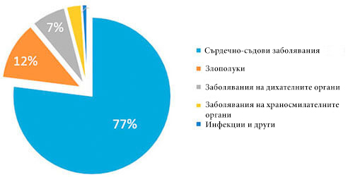

Статистика: Всеки 3-ти гражданин на възраст над 35 години умират от болести, причинени от високото кръвно налягане!
Л. А. Божидаров:«Аз лично 2020 ще изпратя на първия читател средството от хипертония с 50% отстъпка »

Известният кардиохирург, организатор на медицинските науки, професор.
Сърдечно-съдовите заболявания са световните лидери сред болестите по брой на човешките животи, които те отнемат. 94% от инфарктите и инсултите възникват именно поради високото кръвно налягане. В 89% от случаите хипертонията, инфарктът и инсулта завършват фатално. Ако се говори с конкретни стойности, то хипертонията е причина за около 77-78% от «естествените» смъртни резултати. В абсолютни цифри — това са около 1,54 милиона смъртни случаи през 2016 г.
“Причини за смъртността през 2019г.”
Най-лошото е, че повечето хора дори не подозират, че имат хипертония. Според статистиката 67% от хората с хипертония не знаят, че са болни. Работата е там, че никой не възприема на сериозно скачането на кръвното, докато не стигне до хипертонична криза, когато кръвното просто става много високо. Малко хора обръщат внимание на главоболието, виенето на свят, слабостта, оток на лицето, сърцебиенето, замъгленото зрение и нервността. А междувременно, всички тези симптоми говорят вече за хронична хипертония. И че е време вече спешно да се вземат мерки, докато не е станало прекалено късно!
Към днешна дата има само едно средство от високо кръвно налягане, което действа върху причината на заболяването и, ако се спазват инструкциите може напълно да премахне хипертонията. Факт е, че препарат «» напълно възстановява тонуса на кръвоносните съдове, благодарение на уникална научна формула. Също така, препарат понижава холестерола и нормализира сърдечния ритъм. Много е важно, че «» е не само ефективен, но и безопасен за здравето, тъй като той се състои изцяло от естествени съставки. Така че,""може да се приема на всяка възраст, без страх от странични ефекти и усложнения от страна на други органи. Ефективността и безопасността на препарат е доказана от редица клинични изпитания, в които са участвали повече от 5 000 души.
По-рано «» не се доставяше във всички страни, въпреки, че аз лично водих дълги преговори с производителите. Но сега, най-накрая,«»може да се купи и в нашата страна.

Взето е решение за отмяна на санкциите върху вноса на европейски лекарства срещу хипертония.

— Добър ден, г-жо Йорданова. Моля Ви, разкажете ни, защо бе взето това решение?
— Основната ни задача е да опазим здравето на хората в целия свят. И ако някъде има проблем, ние непременно трябва да го решим. За съжаление, от нашата страна дойдоха печални данни: над 70% от жителите страдат от хипертония, а почти всеки трети умира от сърдечно-съдови заболявания. Този процент е много пъти по-висок от европейските показатели.
— Това наистина са страшни цифри! Моля, кажете ни как се борят в Европейският съюз с такъв проблем като хипертонията?
— В момента във всички европейски клиники и центрове за рехабилитация навлиза иновативното средство «», разработено от германските учени. Особеността на "" е в това, че няма противопоказания и лекува съдовете на клетъчно ниво. Той позволява бързо да се нормализира кръвното и не допуска развитието на сърдечно-съдови заболявания.

— Г-жа Йорданова, вярно ли е, че това средство вече го има и при нас?
— Да, точно това имам предвид, когато говоря за временното сваляне на санкциите върху вноса на европейски лекарства срещу хипертония. Това решение беше взето на най-високо ниво и беше постигнато съгласие. Когато говорим за здравето на хората, не може да става дума за политика.
— Разкажете ни как «» се отразява на организма?
— Въз основа на резултатите от проучванията на Световната здравна организация, средството«»има следните ефекти:
- • довежда до тонизиране на кръвоносните съдове;
- • понижава холестерола;
- • нормализира сърдечния ритъм.
В момента имаме следната статистика:
- – при провеждането на профилактика на сърдечно-съдовите заболявания на хора над 35 годишна възраст с помощта на средството «» се наблюдава нормализиране на кръвното налягане при 97% от анкетираните;
- – при назначаването на средството «» в периода на възстановяване след пренесени хипертонични кризите, подобряване на притока на кръв в кръвоносните съдове на главния мозък се наблюдава при 86% от хората.
— Г-жо Йорданова, много Ви благодаря за интервюто! Това наистина е прекрасна новина за всички хора. Да се надяваме, че сега вече можем да се справим с хипертонията и да увеличим средната продължителност на живота на българите.
Коментари